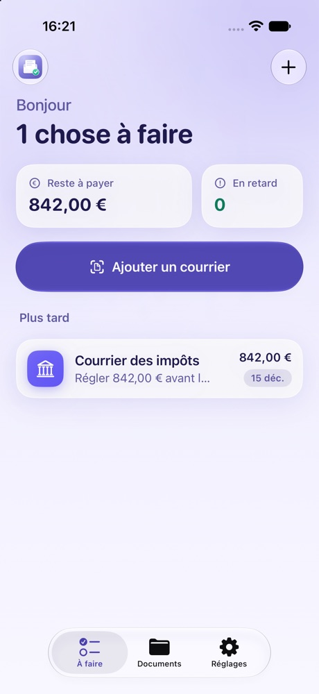
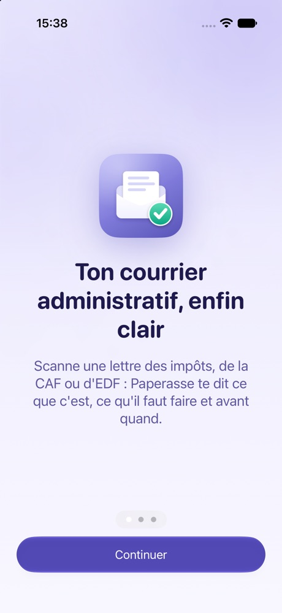
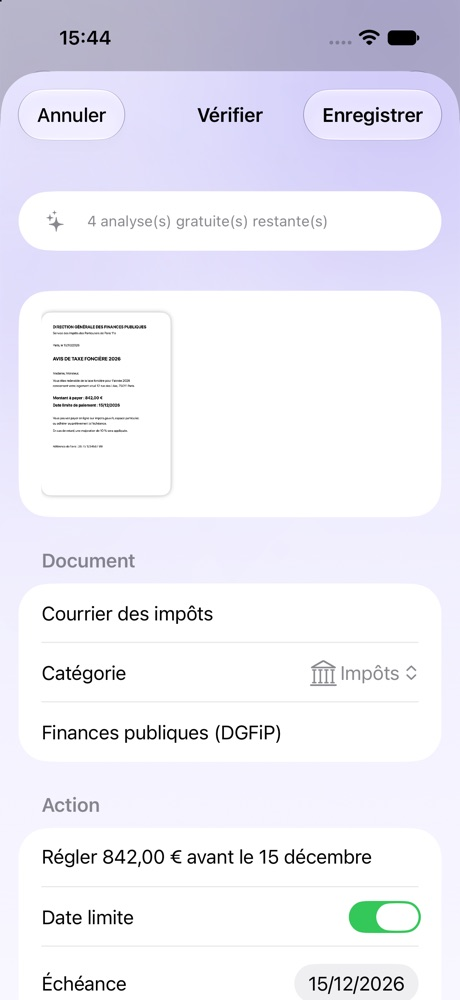

Ton courrier administratif, enfin clair.
Scanne une lettre des impôts, de la CAF ou d'EDF. Enfin clair te dit ce que c'est, ce qu'il faut faire et avant quand. Sans rien envoyer sur Internet.

Trois gestes, et c'est réglé
Fini la pile de courrier qu'on évite. Enfin clair lit pour toi et te dit l'essentiel.
Scanne
Un courrier papier, une photo, ou un PDF reçu par mail. Même depuis le bouton Partager.
Comprends
Qui t'écrit, combien, avant quand, et ce qu'il faut faire. Ou que tu n'as rien à faire.
N'oublie plus
Un rappel 7 jours avant, la veille et le jour J. Fini les majorations et les relances.
Rien ne quitte ton iPhone.
Tes papiers parlent de tes revenus, de ta santé, de ton adresse. Ils n'ont rien à faire sur un serveur. Enfin clair les lit et les comprend directement sur ton téléphone, même en mode avion.
- ✓Aucun compte, aucun serveur
- ✓Analyse par l'IA d'Apple, directement sur l'iPhone
- ✓Documents chiffrés et protégés par Face ID
- ✓Aucune donnée collectée, aucune publicité
Un aperçu
Une app calme et lisible, en mode clair comme en mode sombre.


Tout ce qu'il faut, rien de plus
Impôts, CAF, URSSAF…
Classement automatique : impôts, CAF, santé, énergie, box, amendes, logement, banque.
Rappels d'échéance
Des notifications discrètes, sans rien de sensible sur l'écran verrouillé.
Prélèvements reconnus
Une facture déjà prélevée ? Enfin clair le voit et ne t'embête pas avec.
Un coffre cherchable
Retrouve n'importe quel document en tapant un mot qu'il contient.
Sauvegarde chiffrée
Exporte tes documents dans un fichier protégé par ton mot de passe.
Marche hors ligne
Lecture et analyse sans connexion. Même dans le métro.
Questions fréquentes
Combien ça coûte ?
Enfin clair est gratuite pour commencer, avec plusieurs analyses automatiques offertes. Ensuite, un abonnement Premium débloque les analyses illimitées et les rappels. Le prix sera annoncé au lancement, et les inscrits à la liste d'attente seront prévenus en premier.
Sur quels iPhone ça marche ?
Sur les iPhone avec iOS 26. L'analyse la plus précise utilise Apple Intelligence (iPhone 15 Pro et plus récents). Sur les autres modèles, une analyse simplifiée prend le relais.
Mes documents sont-ils envoyés quelque part ?
Non. La lecture, l'analyse et le stockage se font sur ton iPhone. Il n'y a ni compte ni serveur Enfin clair : nous ne pouvons pas voir tes documents, même si nous le voulions.
Est-ce une app officielle de l'administration ?
Non. Enfin clair est une app indépendante, sans lien avec l'administration. Elle t'aide à comprendre tes courriers, mais en cas de doute, la référence reste l'organisme qui t'a écrit.
Et sur Android ?
Enfin clair est d'abord pensée pour iPhone. Si tu veux une version Android, inscris-toi quand même : ça nous aide à décider.
Sois parmi les premiers
Inscris-toi pour tester Enfin clair avant tout le monde et être prévenu de sa sortie.
Rejoindre la liste d'attenteLa liste d'attente ouvre très bientôt. En attendant, suis-nous sur TikTok et Instagram : @enfinclair
Ton e-mail sert uniquement à te prévenir du lancement. Désinscription en un clic. En savoir plus